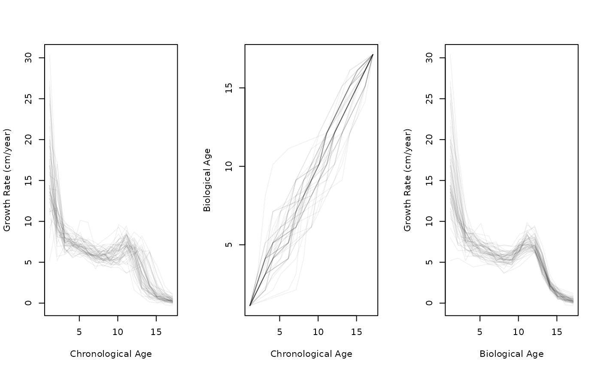
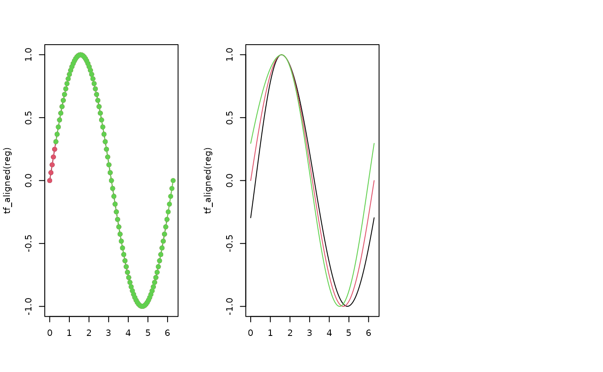

tf_register() is the high-level entry point for functional data registration.
It estimates warping functions, applies them to align the data, and returns a
tf_registration result object containing the aligned curves, inverse
warping functions (observed to aligned time), and template. Use
tf_aligned(), tf_inv_warps(), and tf_template() to extract components.
Usage
tf_register(
x,
...,
template = NULL,
method = c("srvf", "cc", "affine", "landmark"),
max_iter = 3L,
tol = 0.01,
store_x = TRUE
)Arguments
- x
a
tfvector of functions to register.- ...
additional method-specific arguments passed to backend routines (for example
critformethod = "cc"). Seetf_estimate_warps()for method-specific argument documentation.- template
an optional
tfvector of length 1 to use as the template. IfNULL, a default template is computed (method-dependent). Not used formethod = "landmark".- method
the registration method to use:
"srvf": Square Root Velocity Framework (elastic registration)."cc": continuous-criterion registration via a tf-native dense-grid optimizer with monotone spline warps."affine": affine (linear) registration."landmark": piecewise-linear warps aligning user-specified landmarks.
- max_iter
integer: maximum Procrustes-style template refinement iterations. Default
3L.- tol
numeric: convergence tolerance for template refinement. Default
1e-2.- store_x
logical: store original data in the result object? Default
TRUE. Set toFALSEto save memory.
Value
A tf_registration object. Access components with
tf_aligned(), tf_inv_warps(), tf_template().
Details
For a lower-level interface that returns only warping functions (without
performing alignment), see tf_estimate_warps().
Important method-specific arguments (passed via ...)
For method = "srvf":
lambdanon-negative number: penalty controlling the flexibility of warpings (default is
0for unrestricted warps).penalty_methodcost function used to penalize warping functions. Defaults to
"roughness"(norm of their second derivative),"geodesic"uses the geodesic distance to the identity and"norm"uses Euclidean distance to the identity.
For method = "cc":
nbasisinteger: number of B-spline basis functions for the monotone warp basis (default
6L, minimum 2).lambdanon-negative number: roughness penalty for the warp basis (default
0for unpenalized warping).critregistration criterion. Defaults to
2for the first-eigenfunction variance criterion; alternative is1for integrated squared error.convnon-negative convergence tolerance for the inner optimizer. Default is
1e-4.iterlimmaximum number of inner optimization iterations per curve. Default is
20L.
For method = "affine":
typecharacter:
"shift"(translation only),"scale"(scaling only), or"shift_scale"(both). Default is"shift".shift_rangenumeric(2): bounds for shift parameter. Default is
c(-range/2, range/2)where range is the domain width. Larger bounds allow greater shifts but may result in moreNAvalues.scale_rangenumeric(2): bounds for scale parameter. Default is
c(0.5, 2). Must havelower > 0.
For method = "landmark":
landmarks(required) numeric matrix of landmark positions with one row per function and one column per landmark. Use
tf_landmarks_extrema()to find peaks/valleys automatically.template_landmarksnumeric vector of target landmark positions. Default is column-wise mean of
landmarks.
References
Ramsay JO, Hooker G, Graves S (2009). Functional Data Analysis with R and MATLAB. Springer, New York. doi:10.1007/978-0-387-98185-7 .
Srivastava A, Wu W, Kurtek S, Klassen E, Marron JS (2011). "Registration of Functional Data Using Fisher-Rao Metric." arXiv:1103.3817.
Tucker JD, Wu W, Srivastava A (2013). "Generative models for functional data using phase and amplitude separation." Computational Statistics & Data Analysis, 61, 50–66. doi:10.1016/j.csda.2012.12.001 .
See also
Other registration functions:
tf_align(),
tf_estimate_warps(),
tf_landmarks_extrema(),
tf_registration,
tf_warp()
Examples
# Elastic registration (SRVF method)
height_female <- subset(growth, gender == "female", select = height, drop = TRUE)
growth_female <- tf_derive(height_female) |> tfd(arg = seq(1.125, 17.8), l = 101)
reg <- tf_register(growth_female)
layout(t(1:3))
plot(growth_female, xlab = "Chronological Age", ylab = "Growth Rate (cm/year)")
plot(tf_inv_warps(reg), xlab = "Chronological Age", ylab = "Biological Age")
plot(tf_aligned(reg), xlab = "Biological Age", ylab = "Growth Rate (cm/year)")

# Affine registration (shift only)
t <- seq(0, 2 * pi, length.out = 101)
x <- tfd(t(sapply(c(-0.3, 0, 0.3), function(s) sin(t + s))), arg = t)
reg <- tf_register(x, method = "affine", type = "shift")
#> Warning: ℹ 10 evaluations were `NA`
#> ✖ Returning irregular <tfd>.
#> Warning: ℹ 10 evaluations were `NA`
#> ✖ Returning irregular <tfd>.
#> Warning: ℹ 10 evaluations were `NA`
#> ✖ Returning irregular <tfd>.
plot(tf_aligned(reg), col = 1:3)
# Landmark registration
peaks <- tf_landmarks_extrema(x, "max")
reg <- tf_register(x, method = "landmark", landmarks = peaks)
plot(tf_aligned(reg), col = 1:3)
